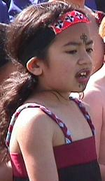
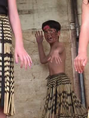
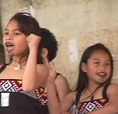

Teacher Professional Development Materials Teacher Professional Development Materials |
Kapa Haka Festival Gala – Okaiawa Primary School
Organisation/Planning
|
|
- The teacher aide/kaiako acted as an organiser for the whole
event. She has family connections with two other local marae and as the secretary for the marae used as a venue for the event she served a key role in effecting the local communication and cooperation necessary for the successful running of the event.
- Many marae members had been to the school and were keen to support
this initiative.
- Extra organisation was needed for the marae to support the festival.
- The planning evolved over six months and entailed many preplanning
meetings involving the board of trustees, the Student School Council,
and staff.
- Local schools in the Taranaki region were invited to participate.
- Regular progress reports were sent to all groups updating them
with news, changes to the programme, and details about the groups
participating and the marking criteria for the performances.
- Each group was given a guideline of 15 minutes performance time.
Okaiawa School
- The foundation learning in te reo kori provided a basis for
kapa haka work within the Okaiawa School classroom programme.
The social worker provided an important male perspective for kapa
haka. Extra practices were held before the festival.
- Visits to a local marae began at the end of 2000. Students
watched the women making the tukutuku panels for the new meeting
house and then had the opportunity to help. During a second visit,
in 2001, students were taught flax crafts, observed traditional
Māori art, and subsequently created their own. Students made gifts
from timber and shells that were used as prizes at the festival.
- The festival was an extension of the 2001 school-wide focus
on the arts programme integrated with a social studies emphasis
on teaching tolerance and understanding of other cultures.
- Enhancing the self-esteem of the boys in the school was targeted
by the school and the male social worker as an area for proactive
programme development.
|

|
Curriculum Links
The programme of learning took place over 6 months and had the
following curriculum links:
Arts
Social Studies
Specific learning outcomes included:
The students are able to:
- perform a haka in a formal situation;
- demonstrate understanding of marae protocol;
- create an artwork using traditional designs;
- better understand our bicultural heritage and appreciate/demonstrate
tolerance of others.
|

|
|
The Arts Festival
- The festival involved all staff and students from Okaiawa School.
- Two mainstream and four total immersion schools took part in
the festival.
- Schools had to arrange their own transport to and from the
venue, the furthest distance being New Plymouth.
- All the facilities at the marae were available for festival
use.
- A large open-sided truck was organised by the chairperson of
the Board of Trustees to act as a stage. The truck and a large
open marquee for performers and spectators were set on the lawn
within the grounds of the marae.
- Okaiawa school was part of the Arts Contract for 2001. The
festival gave them an opportunity to display some of the
work done in dance, music, and visual arts.
- Artwork from Okaiawa School was on display as a backdrop on
stage and in the foyer of the marae.
|

|
- The performance order of the groups was important as it was
felt that the mainstream schools should go first so that they
would not feel daunted by the level of performance from total
immersion groups.
- Three elders from Te Aroha Marae were invited to be judges
and the teacher aide gave them marking guidelines.
Budget and resourcing
- All entrants paid $30 registration.
- The festival received a grant from the Taranaki District Council
(Creative Communities New Zealand Scheme).
- There was strong support from local businesses and families,
for example the use of the truck.
- All the prizes were donated, including a shield with a 60-year
history.
|
The
shield was donated because it has a lot of history – 60 years
Māori rugby. It is like a rebirth, but instead of playing rugby
we are on the stage performing. At the start of the festival
a challenge was laid down that whoever wins this must invite
us and others back next year to play for the shield.
The teacher aide/kaiako |
|
|